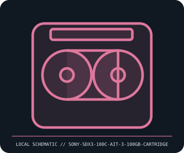

[ REMOVABLE MEDIA // MODEL-SPECIFIC RECORD ]
Sony SDX3-100C AIT-3 100 GB Data Cartridge
Sony AIT-3 Advanced Intelligent Tape, SDX3-100C cartridge. This catalog entry distinguishes the removable medium from its drive/reader and calls out model-specific fit and format caveats.

IDENTIFICATION: Transcribe the entire model/part number, capacity, generation and revision from the label or packaging. Confirm the exact host-device manual before inserting or writing.
Format, capacity and compatibility
| Product / part ID | Sony SDX3-100C AIT-3 100 GB Data Cartridge |
|---|---|
| Generation / format | Sony AIT-3 Advanced Intelligent Tape, SDX3-100C cartridge |
| Capacity and medium | Sony SDX3-100C AIT-3 data tape, 100 GB native capacity (up to 260 GB at vendor compression assumptions); AIT-3 uses 8 mm Advanced Metal Evaporated tape and cartridge memory for library metadata. |
| Compatibility | Requires an AIT-3-capable drive such as Sony SDX-700C; some later AIT generations read/write prior-generation media, but model-specific support tables govern. Not interchangeable with DDS/DAT, LTO, or consumer 8 mm video cassettes. |
| Version and model caveat | SDX3-100C is AIT-3 100 GB media. AIT-3Ex and later AIT-4/5 capacities and write support differ; compression is not a guaranteed user-data capacity. Check drive model and firmware before loading. |
Handling and preservation
Store in a case, clean and dry, away from dust, smoke, magnets, direct sun, and heat. Acclimate sealed media before use. Avoid touching the tape or opening the shell; maintain multiple verified copies and test restore/readability on a known-compatible drive.
- Preserve original packaging, label, acquisition notes and any write-protect state; photograph the media before use.
- Make at least two independent copies of valuable data, verify checksums, and periodically test a restore. A removable cartridge or card alone is not an archival strategy.
Model and version notes
SDX3-100C is AIT-3 100 GB media. AIT-3Ex and later AIT-4/5 capacities and write support differ; compression is not a guaranteed user-data capacity. Check drive model and firmware before loading.
Standards and product-family sources establish the generation; exact model manuals, labels, regional revisions, firmware, interface and host support determine actual interchangeability.
Sources and standards
- Sony — AIT-3 product technology brochureManufacturer literature on AIT-3 capacity, AME tape, cartridge memory, and media/drive generation.
- Sony — AIT storage media archiveManufacturer family context; consult exact SDX3-100C and drive manuals for compatibility.
Manufacturer and standards references are preferred; archival manuals or museum records are identified when products are discontinued. Capacity and compatibility claims are scoped to the specific SKU and generation named above.